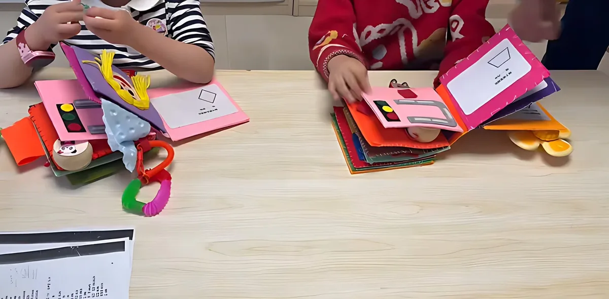
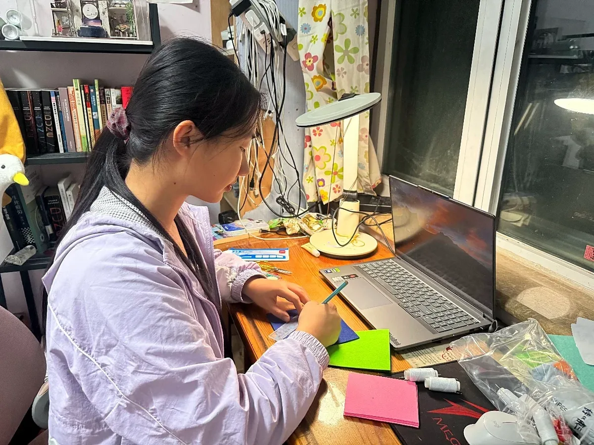
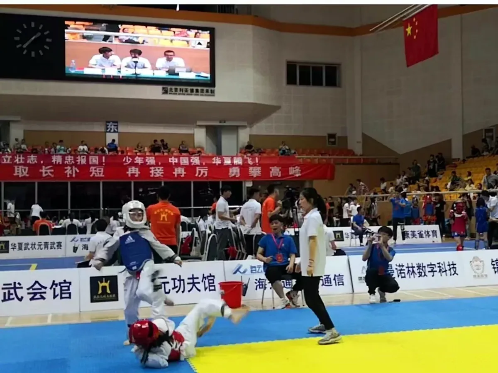
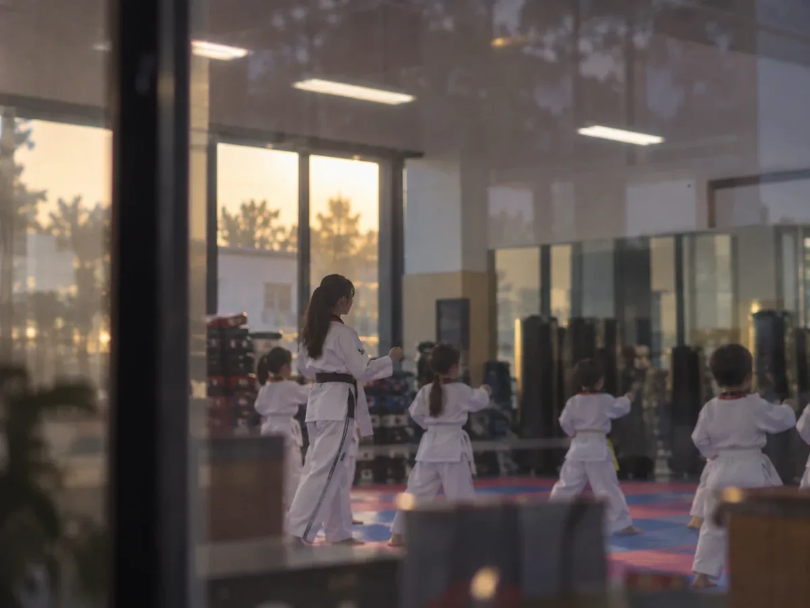
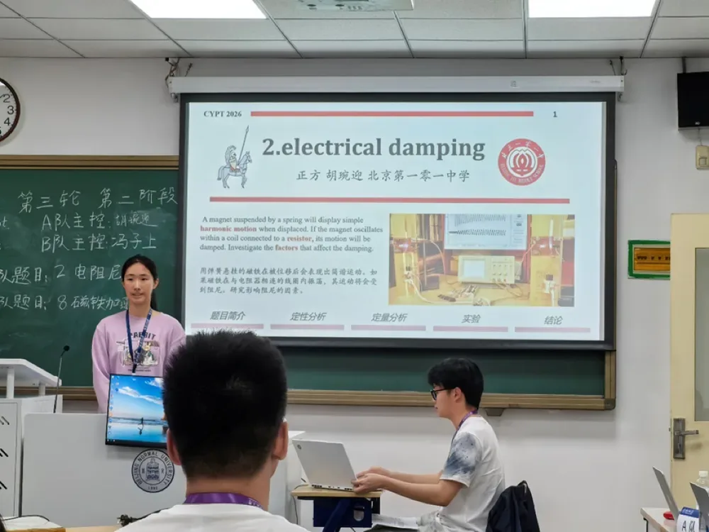

AMYHU

I keep asking the same question in different materials: how does a person come to know the world? With a fingertip on felt, an eye at the scale of a desk, a tongue that remembers a kitchen, a hand that waits before the note. And when one of those senses begins to fail, what can I build to help?

Physics tournaments, laboratories at Peking University and the Chinese Academy of Sciences, an AI hearing aid, and the company I founded to build it.
- Asking · coupled pendulums, metallic glass, optics, modelling 4
- Building · SmartHearing, Curawave 2 prototypes
- Lingtong Future Technology founder

Tactile books for blind children, a house small enough for a desk, a baking book on Amazon, the guzheng on stage and a black belt on the mat.
- Even Without Sight · tactile books leader
- A House in Miniature 200+ parts
- The Physics of Baking published
- Guzheng · Taekwondo black belt
TouchSightTasteSound


What is a triangle to a hand that has never seen one drawn?
See the project →02 / 04 · A house in miniatureHow much of a home survives when it is shrunk onto a desk?
See the project →03 / 04 · The physics of bakingWhy can a cake never be unbaked?
See the project →04 / 04 · Guzheng & taekwondoCan silence be part of the music?
See the project →Research &
Entrepreneurship
Two kinds of work, one after the other. First I learned to ask the physical world a precise question. Then I learned to build for a particular person. The second grew out of the first.
Asking
Questions about how the world works, tested in laboratories and tournaments.
Building
Things made for someone, and the company that carries them further.
Out
there
Visits, tournaments, stages and workshops: the places where the work met people.








became one company.— Lingtong, 2026